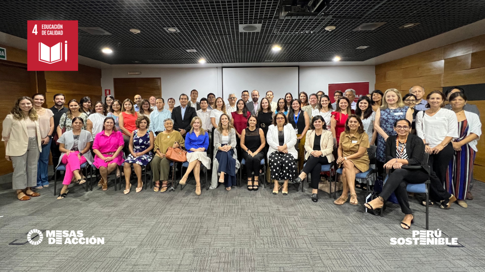

Divide tu tarea
Selecciona una actividad y observa un plan de cuatro micro-bloques de 25 minutos.
Probar planificadorODS 4 · Educación de calidad
PomoPlan es una propuesta para estudiantes universitarios que quieren dividir entregas extensas, enfocarse durante cada bloque y evitar perder tareas por error.
Demostración educativa de interfaz. No se guardan datos ni se bloquean pestañas.


Nuestra propuesta
La sobrecarga académica, el ruido y las distracciones pueden dificultar la concentración. PomoPlan plantea organizar tareas en micro-bloques y ofrecer decisiones claras al usuario.
El proyecto se relaciona con el ODS 4: Educación de calidad al explorar herramientas que faciliten la organización y el aprendizaje.
Explora el recorrido
Selecciona una actividad y observa un plan de cuatro micro-bloques de 25 minutos.
Probar planificador
Simula una decisión consciente antes de interrumpir un bloque.
Probar blindaje
Ensaya eliminar tareas completadas y restaurarlas sin perder la lista de ejemplo.
Probar tareasHU3 · Configura tu plan
Selecciona el tipo de actividad. En esta simulación se muestran planes ilustrativos de cuatro bloques con descansos sugeridos.
Los planes son ejemplos predefinidos: no se generan con IA ni se personalizan automáticamente.
HU1 · Blindaje focal
Visualiza un bloque de estudio y prueba la pausa reflexiva. La duración es una referencia fija para explicar el criterio de aceptación.
BLOQUE 1 DE 4 · DEMOSTRACIÓN INTERACTIVA
Sesión de enfoque en curso
Distracciones menores: 0
Te quedan 25 minutos en este bloque.
Tomar una pausa no planificada puede romper tu estado de flujo. ¿Prefieres continuar o abandonar la sesión?
Al seleccionar "Continuar estudiando", la sesión se reanuda automáticamente.
Limitación HU1: HTML y CSS no detectan cambios de pestaña, no detienen salidas del navegador y no reproducen aislamiento acústico. Aquí se demuestra solamente el panel de decisión.
HU2 · Seguridad al gestionar tareas
Prueba el estado de borrado y usa «Deshacer» para recuperar las tareas de muestra. El aviso permanece visible hasta que lo deshagas.
✓ Leer bibliografía del informe
✓ Organizar referencias académicas
✓ Revisar el esquema del trabajo
Las tareas completadas se quitaron de esta vista.
¿Eliminar las tareas completadas?
Esta acción moverá las tareas a la papelera temporal.
Limitación HU2: el borrado y la recuperación son estados visuales con CSS. No existe temporizador de segundos, guardado local ni eliminación real de datos.
Comparte tu opinión
Completa un formulario de prueba para conocer el recorrido de validación HTML. No se envía ni almacena información.